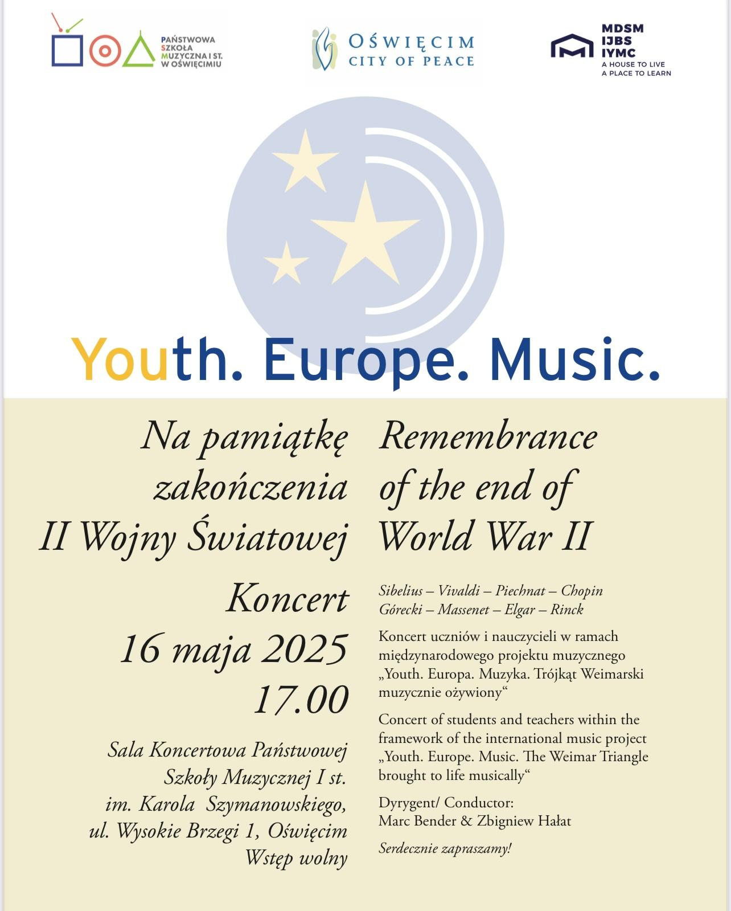
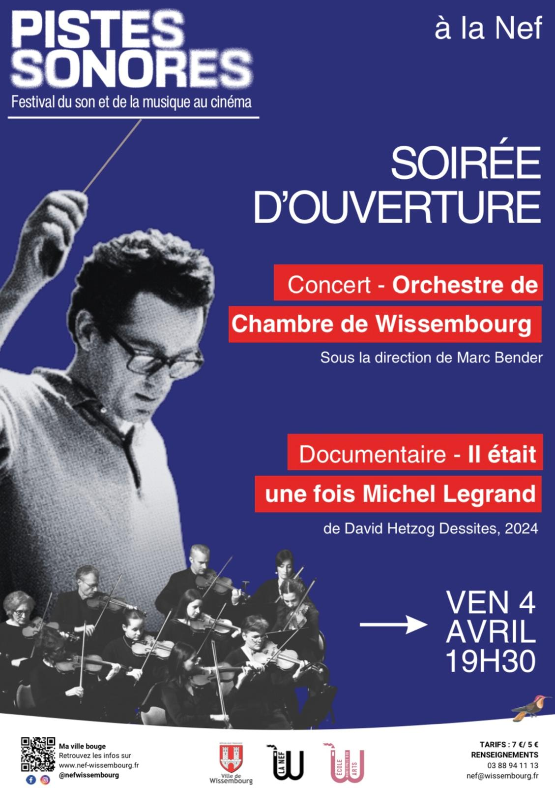
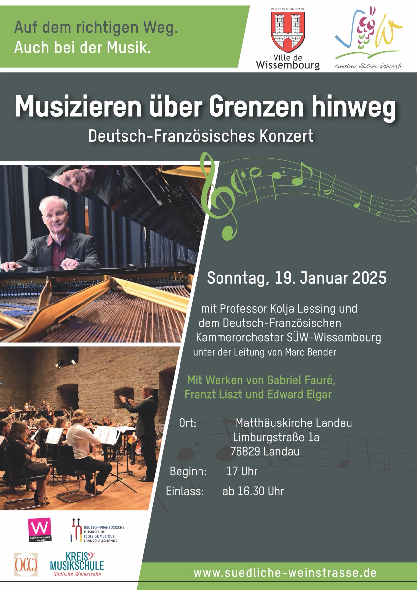
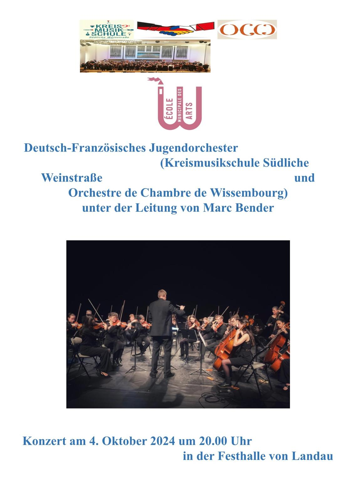
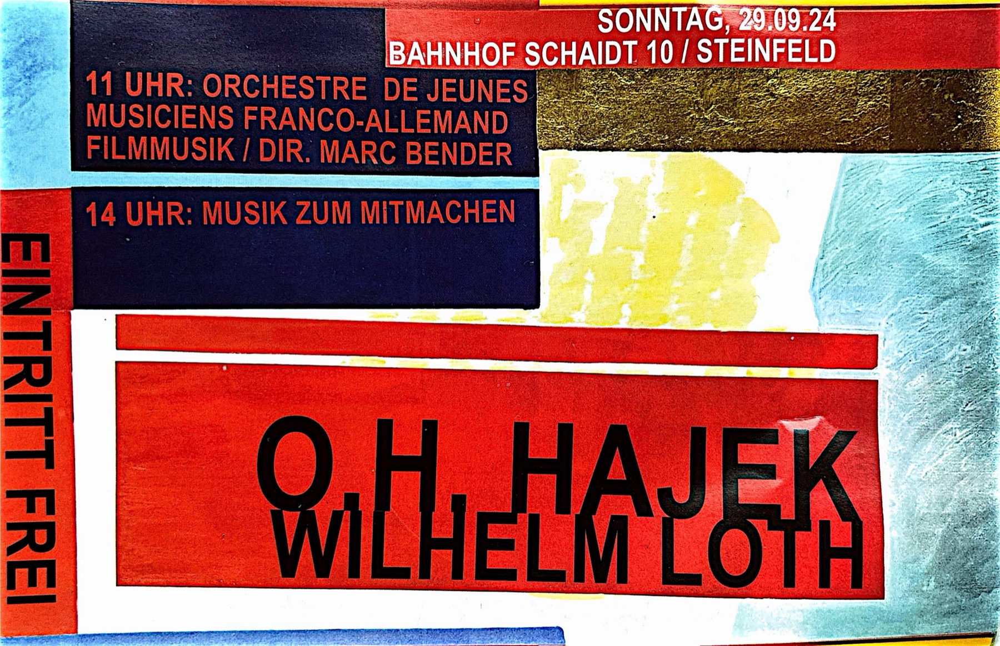

Pamięć orkiestry
Archiwum
Czternaście sezonów koncertowych od 2011 roku, we Francji i w Niemczech. Afisze, fotografie i nagrania wideo: wszystko zachowane i ponownie udostępnione, wreszcie w czytelnej formie.
Sezon 2024-2025
Afisze ostatniego sezonu
Każdy sezon ma własną galerię. Afisze są pokazywane na pełnej stronie i zoptymalizowane tak, by ładowały się szybko, także na telefonie w sieci 4G.





Nagrania
Koncerty na wideo
Nagrania pozostają na kanale orkiestry i są tu osadzone. Nic nie ładuje się, dopóki nie klikniesz: żadnych plików cookie osób trzecich przy otwarciu strony.
Wszystkie sezony
Od 2011 roku do dziś
Szczegółowe strony każdego sezonu, przeniesione ze starej witryny. Będą tu dodawane w miarę postępu migracji.
Zbiór fotograficzny
Trzynaście lat zdjęć, zachowanych na dobre
Zbiór zgromadzony od 2013 roku to blisko 3 GB: zdjęcia koncertowe, afisze, skany prasowe, programy.
Całość została odzyskana i zachowana. Żyje teraz w dwóch miejscach, każde w swojej roli:
Na stronie — wybór z każdego sezonu, w rozdzielczości dopasowanej do ekranu. Zdjęcia ładują się w ułamku sekundy, podczas gdy pliki źródłowe, szerokie nawet na 5000 pikseli, obciążały każdą wizytę.
Poza stroną — komplet oryginałów w wysokiej rozdzielczości, w przestrzeni dyskowej stowarzyszenia i na kopii fizycznej. Strona internetowa służy do pokazywania, nie do archiwizacji: oryginały pozostają dostępne dla prasy, na afisze i do druku.
Odzyskanie plików trzeba wykonać, dopóki stary hosting działa. Po rozwiązaniu abonamentu nie będzie już można ich pobrać.